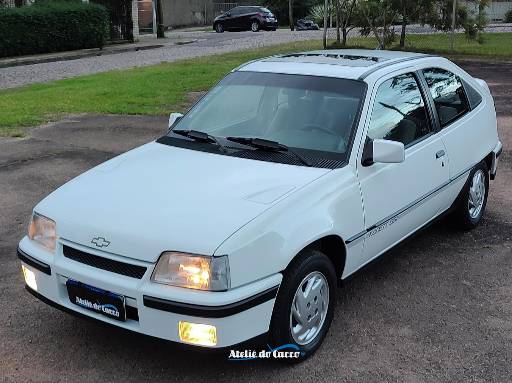
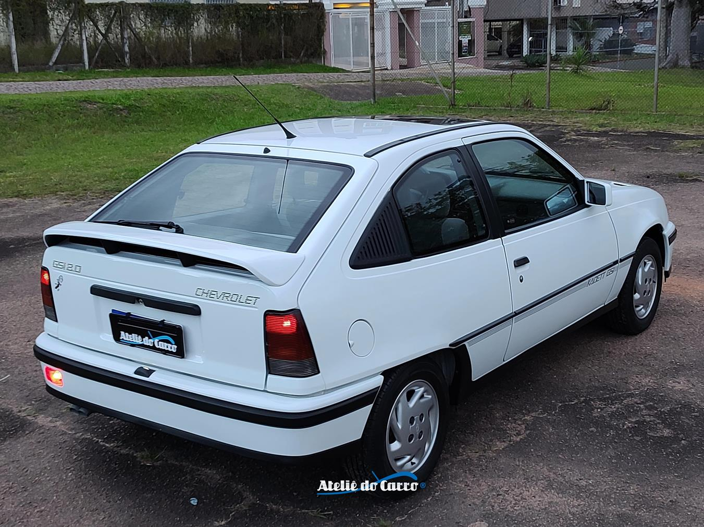

KADETT GSI
"Com sua alma esportiva e design atemporal, o Kadett GSI é um clássico que, mesmo com o passar dos anos, continua a evocar admiração.

HISTÓRIA
o Kadett GSi passou a ter 121 cv (com gasolina), um desempenho notável para a época. Ele vinha equipado com bancos Recaro, teto solar (opcional em alguns anos), e um painel de instrumentos digital que era um verdadeiro show à parte, elevando seu status de carro desejado.
O Kadett GSi marcou uma era, rivalizando com outros esportivos nacionais como o Gol GTi e o Escort XR3i, e conquistou uma legião de fãs pela sua dirigibilidade, tecnologia e design esportivo.
Ele permaneceu em linha até 1995, quando a sigla GSi foi descontinuada no Kadett, abrindo espaço para outros esportivos da GM e para a chegada do Astra, seu sucessor, em 1998.
FICHA TECNICA
Modelo: Kadett GSI
Ano: 1991-1996
Motor: 2.0 MPFI
Potência: 121 cv
Torque: 18,4 kgfm
0–100 km/h: 10,2 s
Vel. Máx: 191 km/h
Peso: 1.060 kg
Tração: Dianteira
Câmbio: Manual 5 marchas
Dimensões (C×L×A): 4.232×1.664×1.380 mm
CURIOSIDADE
O sistema de amortecedores a gás pressurizados. Isso significa que o carro vinha de fábrica com uma tecnologia de suspensão mais avançada para a época, que ajudava a manter o veículo mais estável e com melhor contato com o solo, independentemente do peso transportado ou das condições da via. Esse recurso contribuía diretamente para a dirigibilidade esportiva e o conforto que o GSi oferecia, sendo um diferencial em relação a muitos de seus concorrentes que utilizavam suspensões mais simples.
GALERIA
Imagens do Kadett GSI




Canal: Carro Chefe